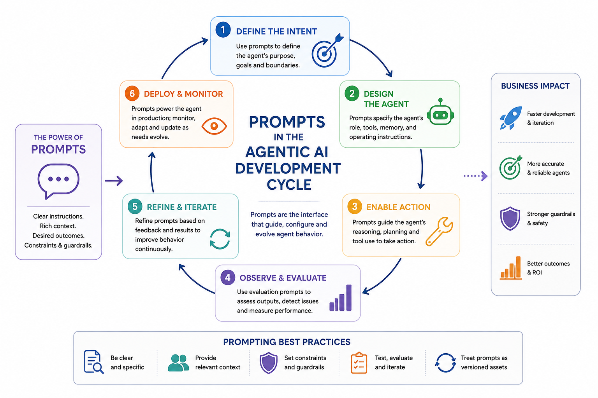
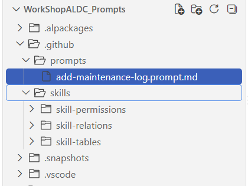
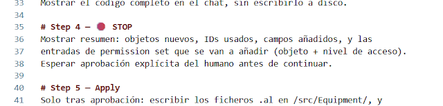

Agentic Development in Business Central: Turning Skills into Executable Prompts
When you automate development with an AI agent, the biggest risk isn't that the model gets something wrong once — it's that it repeats the same mistake a hundred times because nobody gave it a fixed recipe to follow. Instructions set the rules that are always active, and skills provide domain-specific knowledge, but there's a third piece missing: something that turns that knowledge into a concrete, executable task with a beginning and an end. That piece is the prompt.
This article continues the series on agentic development in Business Central, moving from instructions and skills to the piece that ties them together into a controlled workflow.

What a prompt is (and isn't)
A prompt doesn't think — it executes a recipe, step by step. That's the difference between telling an agent "be careful with the data" (an instruction, always active) and giving it a numbered list of what to do first, what to do next, and when to stop and ask (a prompt). Prompts exist specifically to automate repetitive tasks you've already validated — not to explore something new without supervision.
When a prompt chains several steps together with conditional logic between them, it's usually called a prompt-workflow. It's still a prompt — it just has more than one step.
How a prompt file is structured
A prompt lives as a file with two parts: a YAML front matter and a body with the steps.
---
agent: agent
model: Claude Sonnet 5
description: 'Creates a maintenance log table and page for a RentalFlow asset.'
tools: [read, edit/editFiles, search, 'al-symbols-mcp/*']
---Four fields do all the work:
- agent: marks it as a workflow capable of running tools, not a plain conversation.
- model: which model must run this specific task — if the rest of your session is on a different model, invoking the prompt switches it automatically.
- description: a one-line summary so the right prompt gets suggested at the right moment.
- tools: a closed list of allowed tools. The prompt never gets access to "everything available" — only to what that specific task needs.
The body adds guardrails (what never to do) and the numbered steps: read context, decide which skills to load based on the task's domain, generate the result, and — the step that actually makes the difference — stop before applying anything.

Where it lives and how you call it
Prompts live in .github/prompts/ inside the repository, one file per task. To run one, you just type / followed by the file name in the agent chat — Copilot detects it automatically and executes it.
A practical case: a maintenance log for RentalFlow
To see it in action: RentalFlow is the equipment rental app used as the case study. Each piece of equipment already has its own card; what's missing is an associated maintenance log — every time a machine goes in or out of maintenance, it gets recorded.
The prompt that solves this loads three skills in its Step 2, depending on what the task actually needs:
- skill-tables — how the new table should be designed: primary key,
DataClassification, ID range. - skill-relations — how it relates to the existing equipment table.
- skill-permissions — how the permission set gets updated, because every new object needs an entry in it.
None of the three loads "just in case" — the prompt itself decides which ones apply based on what it's about to build.
The guardrail that matters most: the human checkpoint
Before writing a single file, the prompt generates the full result — table, page, and permission entries — and shows it in the chat without touching disk. It stops there and waits for explicit approval.
That checkpoint (human-in-the-loop, or HITL) isn't a decorative step: it's what turns automation into something controllable. The model can automate all the mechanical work — reading context, deciding which knowledge applies, generating correct code — but the final call of "this is what I want" still belongs to a human. Only after an explicit "go ahead" does the prompt move to the last step: writing the .al files and updating the permission set.

Instructions, skills, and prompts, working together
The three pieces fit together like this: the instruction sets the rule that never changes (prefixes, mandatory DataClassification), the skill provides domain-specific knowledge (how to properly build a table, a relation, a permission set), and the prompt ties all of that to a concrete task — with minimal tools and a human checkpoint before anything becomes permanent.
Video walkthrough
The natural next step is to stop telling the agent, prompt by prompt, what to run — and let an agent orchestrate the whole sequence on its own. That's what the next entry in this series will cover.